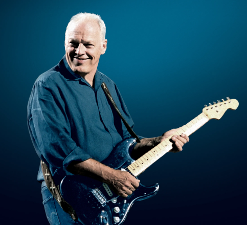
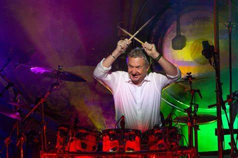

Uma breve viagem na história da minha banda preferida
Integrantes
Roger Waters é um renomado músico e compositor britânico, nascido em 6 de setembro de 1943, e é melhor conhecido como co-fundador da icônica banda de rock progressivo Pink Floyd. Ele serviu como baixista, vocalista e principal compositor da banda, contribuindo para a criação de álbuns aclamados como "The Dark Side of the Moon" e "The Wall". Sua obra frequentemente explora temas como guerra, poder e direitos humanos, refletindo suas fortes convicções políticas e sociais. Após deixar o Pink Floyd em 1985 devido a tensões internas, Waters embarcou em uma carreira solo bem-sucedida, lançando diversos álbuns e mantendo-se ativo na indústria da música, realizando turnês e apresentações. Mesmo após anos de disputas, a banda conseguiu se reunir para uma apresentação no evento de caridade Live 8 em 2005.
Roger Waters


David Guilmour
David Gilmour é outro membro icônico do Pink Floyd, ingressando na banda em 1968 como guitarrista e vocalista. Ele é reconhecido por seu estilo de guitarra distintivo e habilidades de composição, contribuindo significativamente para o sucesso contínuo da banda. Com ele, o Pink Floyd lançou alguns de seus álbuns mais bem-sucedidos e inovadores, incluindo "The Dark Side of the Moon", "Wish You Were Here", e "The Wall". Após o conflito interno e a subsequente saída de Roger Waters em 1985, Gilmour assumiu a liderança do Pink Floyd, guiando a banda por mais alguns projetos, incluindo o álbum "A Momentary Lapse of Reason". Paralelamente, ele também desenvolveu uma sólida carreira solo, explorando diferentes sonoridades e temas musicais. Gilmour continua a ser uma figura influente na indústria da música até hoje.
Richard Wright é um músico britânico, membro fundador do Pink Floyd, atuando como tecladista e ocasional vocalista da banda. Ele contribuiu significativamente para o som característico do Pink Floyd, sendo fundamental na criação de atmosferas sonoras únicas e texturas ricas que definiram álbuns como "The Dark Side of the Moon" e "Wish You Were Here". Sua abordagem musical inovadora e seus arranjos de teclado foram essenciais para o som progressivo e psicodélico da banda. Além de seu trabalho com o Pink Floyd, Richard Wright também lançou projetos solo, embora com menos frequência e visibilidade que seus companheiros de banda. Ele permaneceu com a banda até sua morte em 2008, continuando a contribuir para a música e a evolução sonora do grupo, e é lembrado como uma peça-chave no legado duradouro do Pink Floyd.
Richard Wright

Nick Mason
Nick Mason é o baterista e único membro constante da banda de rock progressivo Pink Floyd, participando da formação da banda desde sua criação em 1965. Ele é reconhecido por seu estilo de percussão distinto e sua habilidade em criar padrões rítmicos complexos, contribuindo para a sonoridade inovadora e experimental da banda. Ao longo dos anos, ele ajudou a definir o som do Pink Floyd em álbuns icônicos como "The Dark Side of the Moon" e "Wish You Were Here". Além de seu envolvimento com o Pink Floyd, Nick Mason também se aventurou em outros projetos musicais e tem um profundo interesse por automobilismo, sendo conhecido por sua coleção de carros clássicos e de corrida. Ele continua ativo na indústria da música, explorando diferentes facetas da arte sonora e mantendo viva a herança musical do Pink Floyd.